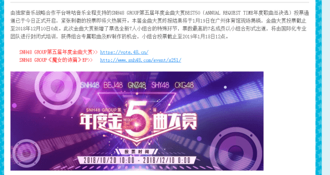
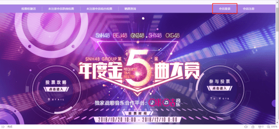
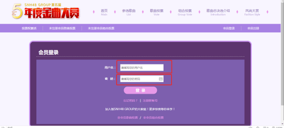
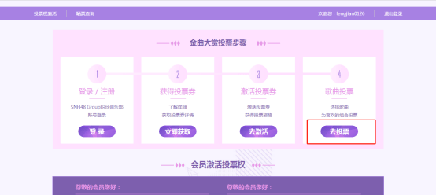
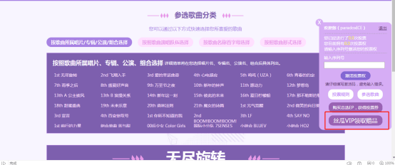
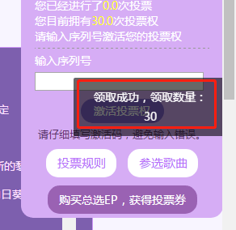
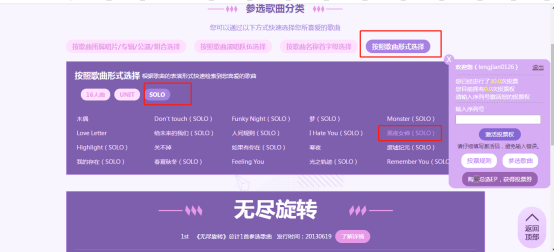
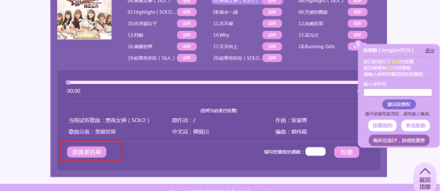

各位灰推小伙伴们，本次金曲大赏中灰灰准备参加的曲目为黑夜女神的solo。为了方便大家领取丝芭会员的免费投票权，现将相关步骤指导教给大家。
注意 苹果手机由于限制原因无法领取，建议大家使用PC端的方式领取。
1 投票网址为：https://vote.48.cn/ 点我跳转
2 进入投票网址后，已经开通丝芭会员的请点击会员登录。
3 会员登录的界面，请输入你的口袋的账号和密码。
4 登录后，请点击4歌曲投票部分去投票。
5 点击投票界面，会在左侧看到领取丝瓜VIP赠品，点击即可领取免费票。
7 领取成功后，即可选择歌曲进行投票。
选择:按歌曲形式选择 solo部分的黑夜女神
8 在点击歌曲后的页面左下角选择表演者名单。
9 在弹出的名单中选择Team X冯晓菲 然后在右下角投票数量中输入你要投出的票数。就可以给灰灰投票啦。希望大家多多支持灰灰的B50金曲表演！